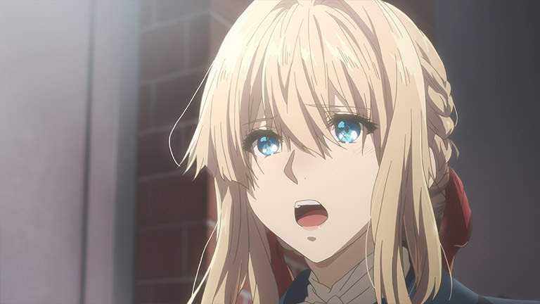
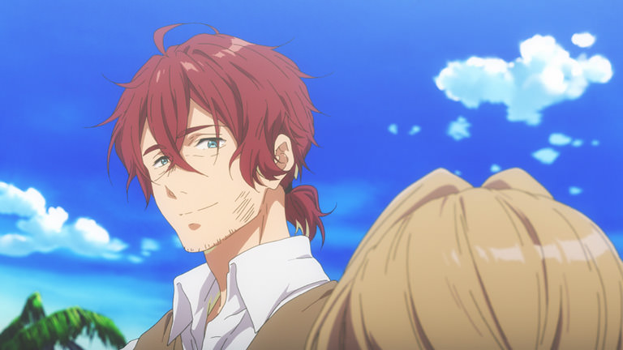
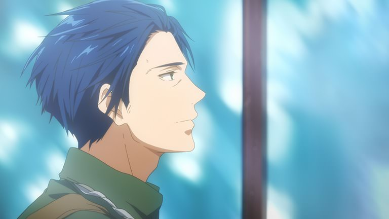
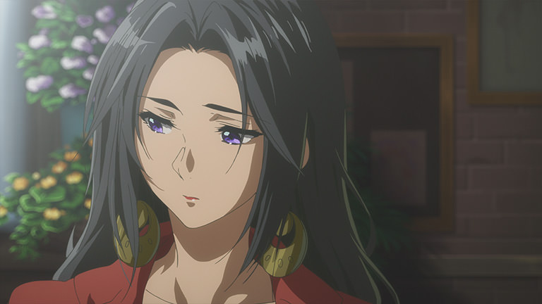
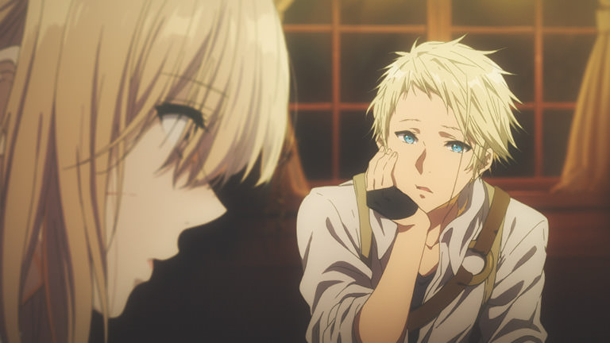

薇爾莉特·艾佛加登（ヴァイオレット・エヴァーガーデン，Violet Evergarden，聲：石川由依） 擁有金髮藍眼的美麗少女。與其美貌不相稱的是，擁有罕見的戰鬥力。幼年時被基爾伯特的兄長利用著，隨後轉手給基爾伯特。原為萊登夏弗多里希帝國的女兵，因其強大的戰鬥力而受人畏懼，並且不被軍中的同袍視為人而是「武器」的存在。後因一場大戰失去了雙手，離開了軍隊。在基爾伯特的引薦下成為艾佛加登家族的養女。
克勞迪亞·霍金斯（クラウディア・ホッジンズ，Claudia Hodgins，聲：子安武人） 原是萊登夏弗多里希帝國的中校，現任C·H郵政公司的社長。也作為薇爾莉特的監護人。雖然和基爾伯特性格完全不同，但在士官學校就已經結識成好友，因騰斯要塞攻堅戰發起前，基爾伯特在軍帳對他說自己如果有什麼三長兩短，薇爾莉特就拜託他照顧了，女主出院後履行承諾將她受僱到自家公司，並帶領女主學習新的事物。
基爾伯特·布甘比利亞（ギルべルト・ブーゲンビリア，Gilbert Bougainvillea，聲：浪川大輔） 萊登夏弗多里希帝國陸軍少校。其家族為創國以來便延續下來的古老家族，因此承襲家族傳統而成為軍人保衛國家。因某一次與兄長會面後的要求下，接收了薇爾莉特並成為她如親人般的存在。
嘉德麗雅·波德萊爾（カトレア・ボードレール，Cattleya Baudelaire，聲：遠藤綾） 與薇爾莉特同樣是C·H郵遞公司的自動手記人偶。喜怒哀樂都很激烈，情感豐富。擁有罕見的怪力，不過也具備感性，因而經常負責為戀愛煩惱的委託人。非常喜歡霍金斯，積極地吸引他，卻總是被無視，這也是她目前的煩惱。總是和貝內迪克特吵架。
貝內迪克特·布盧（ベネディクト・ブルー，Benedict Blue，聲：內山昂輝） C·H郵遞公司的郵遞員。語氣和態度很惡劣，但本性很好的青年。稱呼薇爾莉特為「薇」，在各種方面都很在意她，並對她多有關照。戰鬥能力很高。總是和嘉德麗雅吵架。
